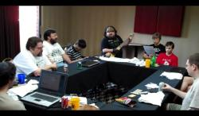

taHjaj wo’ – An Imperial Anthem
This song was written in 1993 by Rich Yampell, and has, as far as I know,
been sung at all the qep’a’mey to date.
To hear this song sung by a dozen or more klingonists in three-piece harmony is
quite an experience!
There is also a parody of this song
called DaHjaj po
– Today morning.
taHjaj wo’ – YouTube video recording by qurgh from qep’a’ wa’maH SochDIch (2010)
|  |
taHjaj wo’ – Musical score
 |
taHjaj wo’ – Table with verses grouped together
 |
taHjaj wo’ – Table with voices grouped together
 |
taHjaj wo’ – MIDI of all voices
|
taHjaj wo’ – MIDI of first voice
|
taHjaj wo’ – MIDI of second voice
|
taHjaj wo’ – MIDI of third voice
|
taHjaj wo’ – Lilypond source code for musical score
|
Most of the files above are the result of me trying to transcribe the song
to into musical score using Lilypond (a Linux note typesetter). As you may
notice the melodies for voices II & III are missing (I hope to get back to this
someday, but it might not happen anytime soon – I’ll be happy to
accept your contribution!)